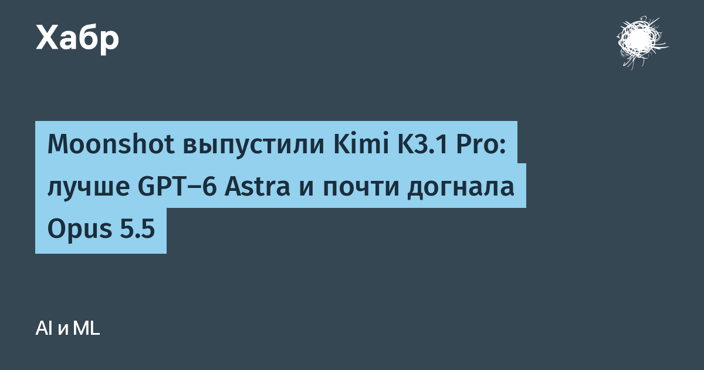

Kimi K3.1 Pro — первая модель новой серии K3.1 и дообученная версия K3 с существенно бóльими вычислительными затратами на reinforcement learning. Компания делает ставку на одновременное обучение в сотнях прикладных областей: агент по терминалу, 3D, финансы, длинные многошаговые задачи. Модель уже доступна в Kimi.ai, Kimi Work, Kimi Code и через API, плюс вышел вариант Highspeed — в 2-3 раза быстрее обычной версии.
На Terminal-Bench 4.0, где агентов проверяют на реалистичных задачах в терминале со строгими тестами, K3.1 Pro набрала 65,7% — это выше GPT-6 Astra (58,2%) и совсем немного ниже Claude Opus 5.5 (66,4%). На внутреннем бенчмарке Kimi Code Bench 3.0 Long-horizon — 61,2% против 55,95% у предшественницы. В BenchCAD (3D-реконструкция через генерацию CAD-кода) — 92,7% с инструментами, при 96,2% у Opus и 95,9% у GPT-6. Уровень галлюцинаций на «стресс-бенчмарке» Kimi Hallu Bench Hard упал с 23,4% у K3 до 8,3% на уровне утверждений.
Moonshot показывает, как модель строила симулятор ходьбы человека поверх анатомической модели human-atlas (296 компонентов скелета, 402 мышцы): за 167 «миссий» и 420 независимых проверок агент сам диагностировал проблемы, чинил контроллер и в итоге поднял время устойчивой ходьбы с пары секунд до 11,2 секунды. Когда подкрутка награды не помогла с руками, модель сама прогнала открытые тесты динамики, нашла и исправила 36 ошибок в расчёте плечевых мышц — без внешнего пинка.
Отдельно интересно признание авторов: по мере масштабирования дообучения возможности в поиске уязвимостей росли сами собой — кибер-контент оказался «вшит» в общий корпус данных и смесь RL-сред. Для открытого релиза weights Moonshot намеренно вычистила кибер-ориентированные данные с обеих стадий обучения, сохранив общее программирование. Редкий случай, когда лаборатория публично описывает, как именно ограничивает опасную сторону модели, — полезный прецедент для всей открытой экосистемы.
Полные веса обещают опубликовать до 4 ноября — тогда модель можно будет смотреть и тестировать локально. Для открытого сегмента это заметный шаг: агентское программирование на уровне фронтира перестает быть эксклюзивом закрытых лабораторий.